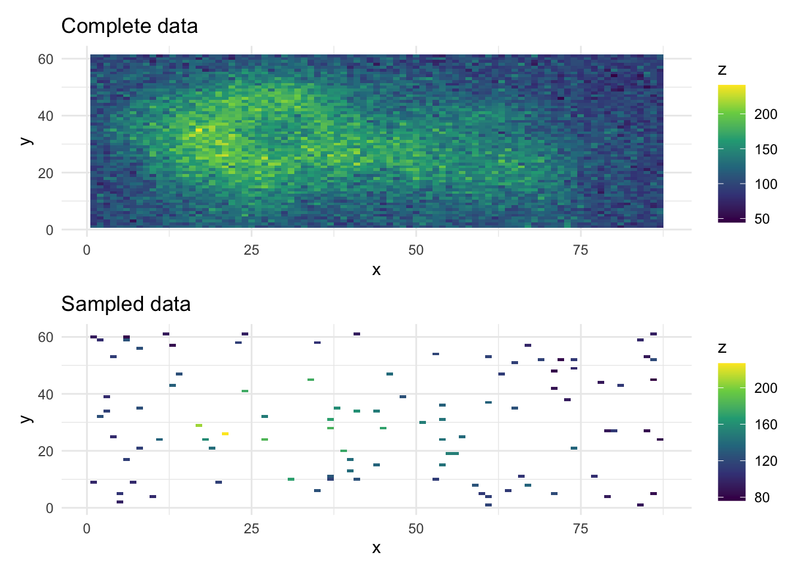

devtools::install_github("glmmTMB/glmmTMB/glmmTMB", ref = "priors")
library(glmmTMB)
library(tmbstan)
library(dplyr)
library(ggplot2)
library(patchwork)
rstan_options(auto_write = TRUE)
options(mc.cores = parallel::detectCores())
rstan_options(threads_per_chain = 1) # does this help with glmmTMB?glmmTMB volcanos demonstration
1 Background
This demonstration is based upon the spatial covariance example from the glmmTMB vignette.
df <- data.frame(
x = as.vector(row(volcano)),
y = as.vector(col(volcano)),
z = as.vector(volcano) + rnorm(length(volcano), sd = 15)
) |>
mutate(
group = factor(rep(1, n())),
pos = numFactor(x = x, y = y)
)
# This is how the complete volcano data looks
complete_plot <- ggplot(df, aes(x = x, y = y, fill = z)) +
geom_tile() +
scale_fill_viridis_c() +
labs(title = "Complete data") +
theme_minimal()
df_sample <- dplyr::sample_n(df, 100)
partial_plot <- ggplot(df_sample, aes(x = x, y = y, fill = z)) +
geom_tile() +
scale_fill_viridis_c() +
labs(title = "Sampled data") +
theme_minimal()
complete_plot / partial_plot
2 Inference with empirical Bayes and a Laplace approximation via TMB
# Fit the model using glmmTMB
fit_glmmtmb <- glmmTMB(z ~ 1 + exp(pos + 0 | group), data = df_sample)
# This section is slow to run
# df$zhat <- predict(fit_glmmtmb, newdata = df, type = "response", allow.new.levels = TRUE)
#
# inferred_plot <- ggplot(df, aes(x = x, y = y, fill = zhat)) +
# geom_tile() +
# scale_fill_viridis_c() +
# labs(title = "Inferred surface") +
# theme_minimal()
#
# inferred_plot + complete_plot3 Using priors
The possible parameters of a glmmTMB model are:
beta,betazi,betad(fixed-effect parameters for conditional, zero-inflation, dispersion models); *b,bzi(conditional modes for conditional and zero-inflation models);theta,thetazi(random-effect parameters, on the standard deviation/Cholesky scale, for conditional and z-i models);psi(extra family parameters, e.g., shape for Tweedie models).
We are using the spatial exponential random effect model exp. Let \theta_1 be the log standard deviation and \theta_2 be the log scale parameter. The formula for the Gaussian covariance is
\rho = \exp(\theta_1) \cdot \exp \left(\frac{d^2}{\exp(\theta_2)^2} \right).
# A wide prior on the intercept
priors <- data.frame(
prior = "normal(0,200)",
class = "fixef"
)
# Fit the model using glmmTMB
fit_glmmtmb_priors <- glmmTMB::glmmTMB(z ~ 1 + exp(pos + 0 | group), data = df_sample, priors = priors)
# As beta estimates are different with and without the prior looks like it's working
fit_glmmtmb$sdrsdreport(.) result
Estimate Std. Error
beta 97.006176 19.8124384
betad 4.781168 0.3180085
theta 3.396495 0.2932826
theta 3.658218 0.6753928
Maximum gradient component: 6.296036e-06 fit_glmmtmb_priors$sdrsdreport(.) result
Estimate Std. Error
beta 96.029829 20.4293165
betad 4.782471 0.3173681
theta 3.403443 0.2991594
theta 3.675541 0.6871279
Maximum gradient component: 4.485231e-06 # What about a prior on theta: how can this be done for both components?
priors <- data.frame(
prior = "normal(0, 1)",
class = "ranef_sd",
coef = "pos"
)
# Doesn't work
# fit_glmmtmb_priors <- glmmTMB::glmmTMB(z ~ 1 + exp(pos + 0 | group), data = df_sample, priors = priors)4 Inference with Hamiltonian Monte Carlo via tmbstan
# This takes a long time to run
# Use the same objective function to run inference with tmbstan
# fit_hmc <- tmbstan(fit_glmmtmb$obj, iter = 300)
# hmc_samples <- rstan::extract(fit_hmc)
#
# n_samples <- nrow(hmc_samples[[1]])
# par_names <- names(fit_glmmtmb$fit$par)
#
# tictoc::tic()
#
# hmc_newparam <- tidyr::expand_grid(i = 1:n_samples, par_name = unique(par_names)) |>
# mutate(newparam = purrr::map2(i, par_name, ~ as.matrix(hmc_samples[[.y]])[.x, ])) %>%
# group_by(i) |>
# summarise(newparam = list(unlist(newparam))) |>
# pull(newparam)
#
# hmc_pred_list <- purrr::map(hmc_newparam, function(.x) predict(fit_glmmtmb, type = "response", newparams = .x))
# hmc_pred_matrix <- do.call(rbind, hmc_pred_list)
# hmc_pred <- colMeans(hmc_pred_matrix)
#
# tictoc::toc()
#
# pred <- predict(fit_glmmtmb, type = "response")
#
# ggplot(data.frame(x = pred, y = hmc_pred), aes(x = x, y = y)) +
# geom_point() +
# coord_fixed() +
# lims(x = c(min(pred), max(pred)), y = c(min(pred), max(pred))) +
# geom_abline(intercept = 0, slope = 1, col = "grey", linetype = "dashed") +
# labs(x = "glmmTMB prediction", y = "tmbstan prediction") +
# theme_minimal()
#
# rhat <- bayesplot::rhat(fit_hmc)
# bayesplot::mcmc_rhat(rhat)
# rhat[order(rhat)]
#
# bayesplot::mcmc_trace(fit_hmc, pars = c("theta[1]", "theta[2]"))5 Computing environment
sessionInfo()R version 4.3.2 (2023-10-31)
Platform: aarch64-apple-darwin20 (64-bit)
Running under: macOS Sonoma 14.2.1
Matrix products: default
BLAS: /Library/Frameworks/R.framework/Versions/4.3-arm64/Resources/lib/libRblas.0.dylib
LAPACK: /Library/Frameworks/R.framework/Versions/4.3-arm64/Resources/lib/libRlapack.dylib; LAPACK version 3.11.0
locale:
[1] en_US.UTF-8/en_US.UTF-8/en_US.UTF-8/C/en_US.UTF-8/en_US.UTF-8
time zone: Europe/London
tzcode source: internal
attached base packages:
[1] stats graphics grDevices utils datasets methods base
other attached packages:
[1] patchwork_1.2.0 ggplot2_3.4.4 dplyr_1.1.4 tmbstan_1.0.91
[5] rstan_2.32.5 StanHeaders_2.32.5 glmmTMB_1.1.8-9000
loaded via a namespace (and not attached):
[1] gtable_0.3.4 TMB_1.9.10 xfun_0.41
[4] QuickJSR_1.1.0 htmlwidgets_1.6.4 devtools_2.4.5
[7] remotes_2.4.2.1 inline_0.3.19 lattice_0.21-9
[10] numDeriv_2016.8-1.1 generics_0.1.3 vctrs_0.6.5
[13] tools_4.3.2 parallel_4.3.2 stats4_4.3.2
[16] curl_5.2.0 tibble_3.2.1 fansi_1.0.6
[19] pkgconfig_2.0.3 Matrix_1.6-5 RcppParallel_5.1.7
[22] lifecycle_1.0.4 farver_2.1.1 compiler_4.3.2
[25] stringr_1.5.1 munsell_0.5.0 codetools_0.2-19
[28] httpuv_1.6.13 htmltools_0.5.7 usethis_2.2.2
[31] yaml_2.3.8 later_1.3.2 pillar_1.9.0
[34] nloptr_2.0.3 urlchecker_1.0.1 MASS_7.3-60
[37] ellipsis_0.3.2 cachem_1.0.8 sessioninfo_1.2.2
[40] boot_1.3-28.1 nlme_3.1-163 mime_0.12
[43] tidyselect_1.2.0 digest_0.6.34 stringi_1.8.3
[46] purrr_1.0.2 labeling_0.4.3 splines_4.3.2
[49] fastmap_1.1.1 grid_4.3.2 colorspace_2.1-0
[52] cli_3.6.2 magrittr_2.0.3 loo_2.6.0
[55] pkgbuild_1.4.3 utf8_1.2.4 withr_2.5.2
[58] scales_1.3.0 promises_1.2.1 rmarkdown_2.25
[61] matrixStats_1.2.0 lme4_1.1-35.1 gridExtra_2.3
[64] memoise_2.0.1 shiny_1.8.0 evaluate_0.23
[67] knitr_1.45 viridisLite_0.4.2 miniUI_0.1.1.1
[70] mgcv_1.9-0 profvis_0.3.8 rlang_1.1.3
[73] Rcpp_1.0.12 xtable_1.8-4 glue_1.7.0
[76] pkgload_1.3.4 rstudioapi_0.15.0 minqa_1.2.6
[79] jsonlite_1.8.8 R6_2.5.1 fs_1.6.3